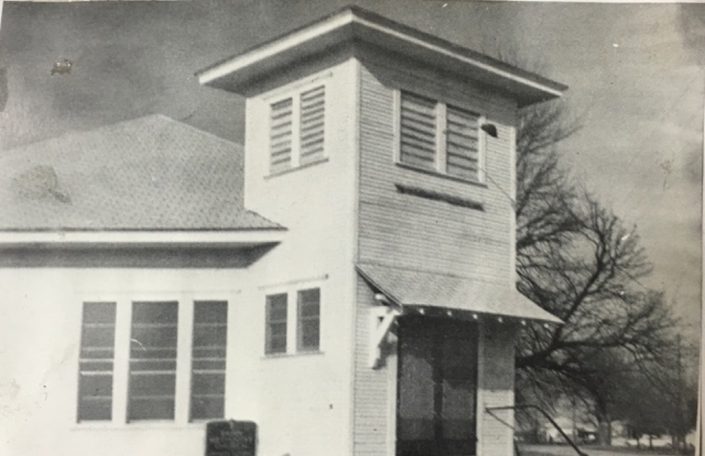
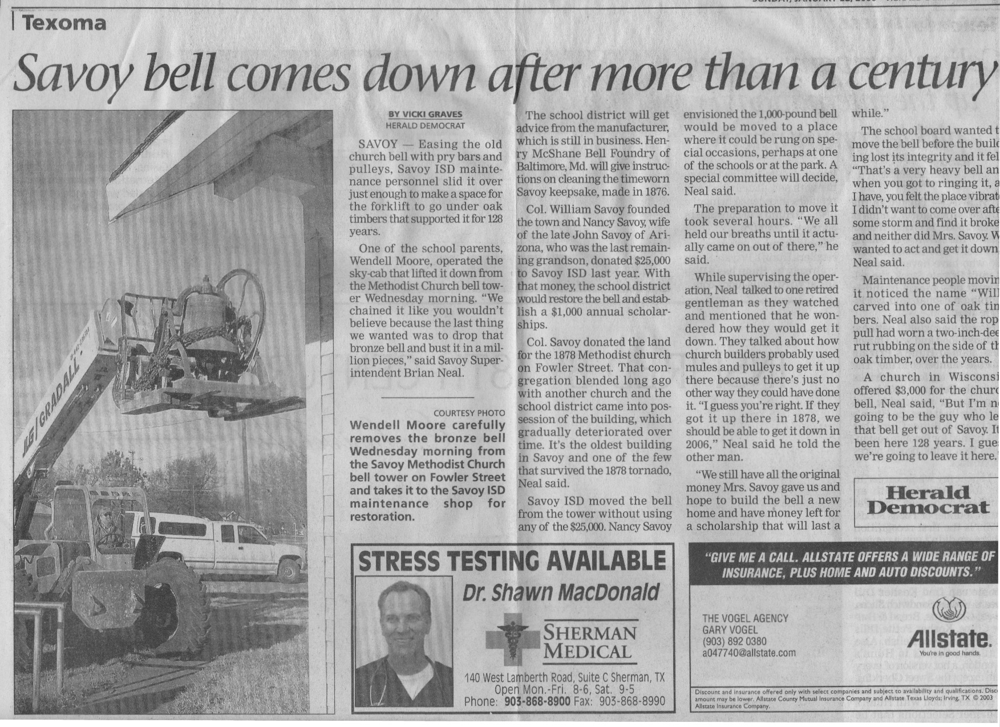

Col. William Savoy gave the town his name. He also gave it the lot on Fowler Street where the Methodist Episcopal Church was built in 1878.
The church's bell rang through the cyclone year of 1880, when the original church records were lost in the storm and had to be reconstructed from memory — "probably in some instances incorrect," the new register admitted. It rang through the years when the college was the intellectual heart of North Texas, and through the years after the college burned and the town had to reconstitute itself around quieter ambitions. It rang through the Depression and through the years when Savoy's young men went to war. It rang through 1954, when the fire took three buildings downtown and the Church of Christ as well.
The church was built in 1878 on a lot donated by Col. William Savoy. The first load of lumber was hauled from Bells by T.W. McSpadden. The Methodists were organized in 1873 by Rev. Graham and Milam.
A bell that has rung through all of that earns a certain consideration.
By 2005, the bell needed restoration. The church — by then one of the oldest surviving structures in Savoy, and among the few buildings standing when the cyclone of 1880 came through — had been standing for more than a century and a quarter. What Col. Savoy had donated in 1872 was beginning to show its age in the way that honest old things do: not broken, but in need of attention.

That year, Nancy Savoy — the widow of the last surviving grandson of Col. William Savoy — wrote a check. Twenty-five thousand dollars, given to Savoy ISD for the bell's restoration and to fund a one-thousand-dollar annual scholarship. It was a gift made to preserve her husband's family legacy — to ensure something lasting remained of the Savoy name in the town the Colonel had founded more than a century before.

There is something clarifying about this ending. The man who founded the town gave away land. The woman who closed out his family line gave away money. Both gifts were given to ensure that the town — which had already survived a tornado, two major fires, the Depression, and the slow attrition of rural America in the twentieth century — would continue to have something to pass down.
The bell was restored. The church on Fowler Street is still standing. The town still bears his name.
All Tales